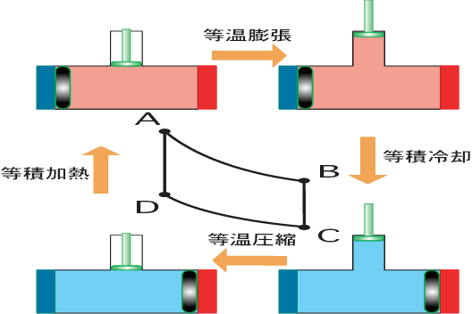

水飲み鳥とよばれるおもちゃが，電池もないのに動くのは不思議ですね．水はエネルギーになるのでしょうか．動く仕組みを探ることにします．赤い液が菅の中を上がったり，下がったりしています．どうも上がると頭が重くなって傾いて，水を飲んでいるようです．傾いた直後，下から泡が入って液体が下がり，鳥は元に戻ります．元に戻る理由は泡が下から入るからです．というわけで，この液体が昇る理由を説明するのがポイントのようです．
液体が上がる理由を説明しましょう．先ず，この鳥には水が必要です．頭全体を覆った部分には水が良くしみ込み，そこから水が盛んに蒸発いたします．蒸発は熱を奪い取り，頭は冷却されます．頭と尻に温度差ができる．実は鳥の内部にはエーテルとか塩化メチレンなどの有機物が入っていて、室温でよく蒸発します．蒸気圧は温度に大きく依存して，温度が高いほど大きくなります．尻と頭ではエーテルの蒸気圧に差があり，そのためエーテルが管の中を昇ります．次に傾いて管の端にエーテルの泡が入り，上に昇って元に戻ります．また，頭のエーテルは冷やされて，というわけで繰り返します．
水飲み鳥は水の蒸発をエネルギー源にして温度差を作り，小さな仕事をする熱機関であると言えます．
Stirling engine
お湯だけで動くエンジンがあるのですが、そのエンジンを単純化するとスターリングサイクルになります．仕組みを見てみましょう。まず，Aで高温熱源に接するので，等温膨張してピストンが押しだされ外に仕事をします．次に仕切りが動き，気体の温度が下がります．しきりの動き自体では気体の体積は変わらないので，等積変化とします．気体が冷えるので，気体は等温圧縮されます．次に仕切りが動き，気体は高温になります．テレビで見せるおもちゃエンジンでは，しきりとピストンは連動して動きます．